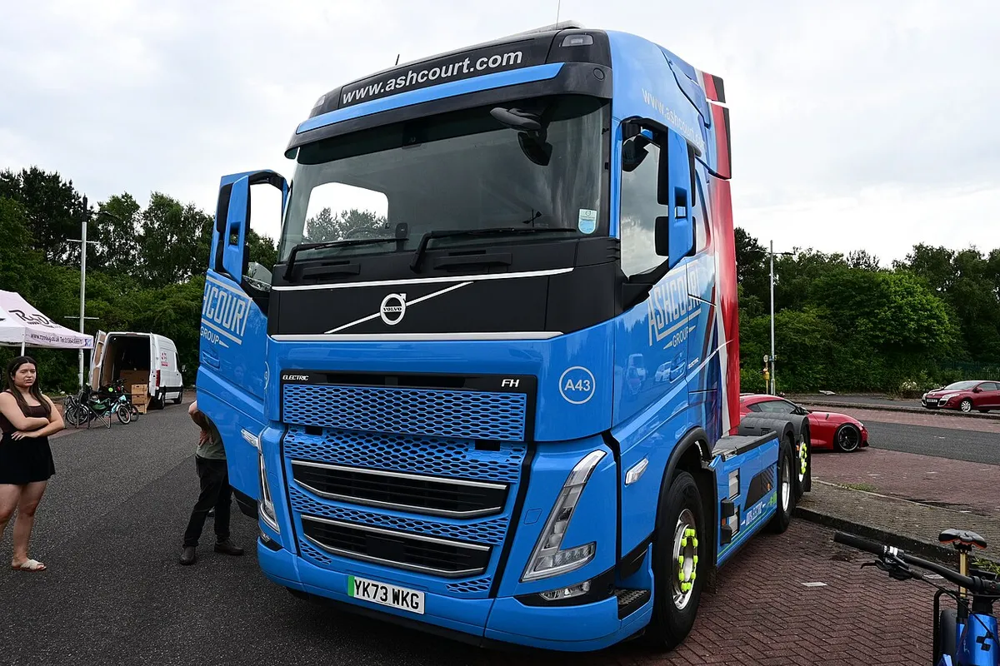
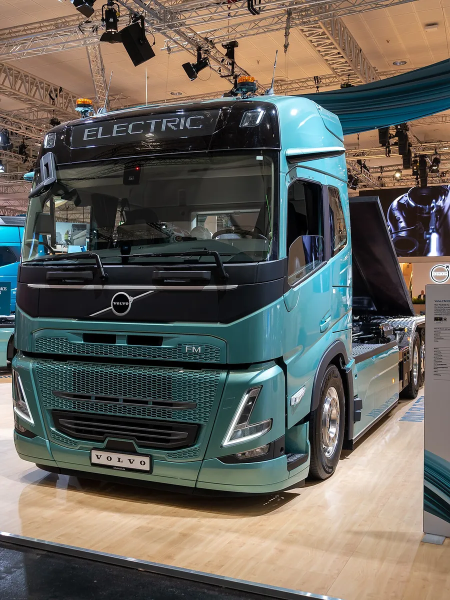
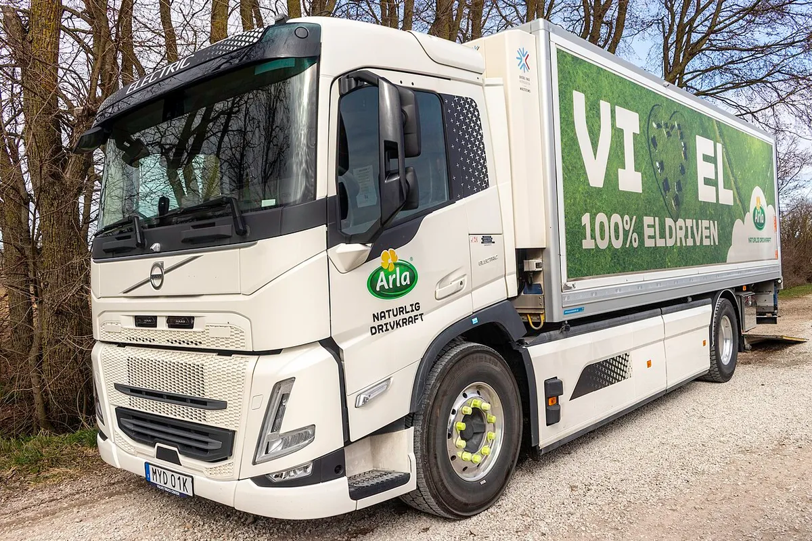
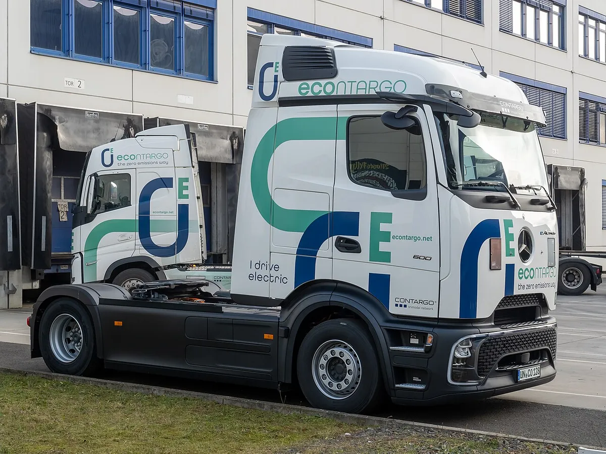
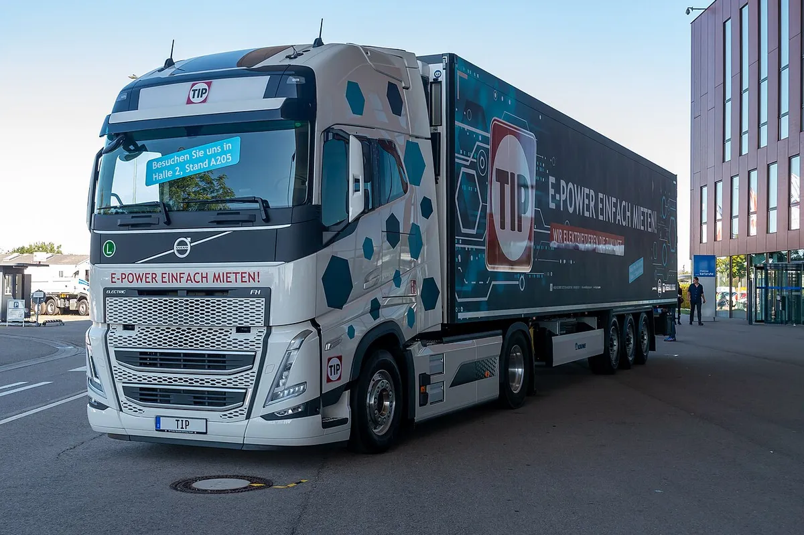

▲ 볼보 FH 에어로 일렉트릭(2024년 공개 당시 모델, 참고 사진) ⓒ Lars Ardarve (Wikimedia Commons, CC BY-SA 4.0)
"디젤 트럭이 긴장할 만한 숫자다." 볼보트럭이 스웨덴 예테보리 투베(Tuve) 공장에서 신형 전기트럭 '볼보 FH 에어로 일렉트릭' 양산에 돌입했다. 해외 매체는 양산 개시를 9월 중순(IAA 시기)으로 전했고, 국내 보도는 9월 30일자다. 오토헤럴드 보도에 따르면 새 e-액슬로 배터리 탑재량을 늘려 1회 충전 최대 700km를 달린다. 다만 이 700km는 "최대치"이고, 볼보 보도자료에는 시험 조건이 자세히 나와 있지 않다. 이 글은 오토헤럴드 원문과 볼보트럭 공식 보도자료, 해외 매체(electrive 등)를 교차해 어떤 트럭인지, 수치가 어디까지 확인되는지를 정리했다.
1. 어떤 트럭인가 — FH 에어로 일렉트릭과 나머지 라인업
오토헤럴드는 이번에 양산에 들어간 모델이 '볼보 FH 에어로 일렉트릭'이라고 전했다. 올해 4월 처음 공개한 차세대 전기트럭 라인업 가운데 첫 생산 차량이 투베 공장에서 출고됐다는 내용이다. 볼보는 같은 세대의 FH·FM·FMX 일렉트릭도 함께 양산에 들어갔다고 밝혔고, 겐트(벨기에) 공장에서도 생산한다고 electrive 등이 전했다. 현재 전기트럭 라인업은 총 8개 모델이다.
▲ 볼보 FH 에어로 일렉트릭(2024년 공개 당시 모델). 이번 양산형은 새 e-액슬과 더 많은 배터리를 얹은 신형으로, 이 사진은 참고용이다 ⓒ Lars Ardarve (Wikimedia Commons, CC BY-SA 4.0)
| 항목 | FH 에어로 일렉트릭 | FH·FM·FMX 일렉트릭 |
|---|---|---|
| 최대 주행거리 | 최대 700km | 최대 470km |
| 구동 | e-액슬(모터 2개+6단 변속기), 460kW(623마력) | 듀얼 모터, 540kW(731마력), 8단 변속기 |
| 총중량(GCW) | 최대 48톤 | 최대 65톤(특수 조합) |
| 적재량 | 최대 28톤 | 최대 23.8톤(4×2 트랙터) |
| 급속충전 | MCS 700kW: 20→80% 약 50분 / CCS 350kW: 약 85분 | CCS 350kW: 20→80% 약 65분 |
2. 700km의 조건 — 무엇이 공개됐고 무엇이 빠졌나
볼보 보도자료는 주행거리를 "최대 700km"로 표기하고 "날씨·공기저항 등 외부 조건, 트럭 총중량, 운전자 성능에 따라 달라진다"고만 덧붙였다. 어떤 시험 모드에서 어떤 하중으로 쟀는지는 발표문에서 확인되지 않았다. 같은 자료에서 FH 에어로 일렉트릭은 GCW 최대 48톤·적재량 최대 28톤으로 제시됐지만, "700km를 48톤에서 달렸다"는 문장은 없다. 그래서 이 글에서는 700km를 '제조사가 밝힌 최대 주행거리'로만 다룬다. 배터리 수치도 매체마다 다르다. 아래 표가 확인된 범위다.
| 항목 | 보도된 값 | 출처·비고 |
|---|---|---|
| 배터리 구성 | 97.5kWh 팩 8개 | electrive |
| 설치 용량 | 780kWh | electrive·newmobility.news·볼보트럭 공식 제품 페이지 |
| 사용 가능 용량 | 725kWh | electrive, 볼보트럭 공식 제품 페이지(확장 주행거리 모델 설치 780kWh·사용 725kWh) |
| 대형 FH·FM·FMX | 사용 가능 640kWh | Electric Cars Report 보도. FH 에어로(사용 725kWh)와 다른 모델군 수치라 직접 비교는 어렵고, 볼보 공식 표와의 일치는 확인하지 못했다 |
| 전비(추산) | 약 1.0kWh/km | 725kWh÷700km을 단순 계산한 값. 공식 전비가 아니며 실제와 다를 수 있다 |
🔎 이 글에서 확인하지 못한 것
· 700km의 시험 방식·적재 조건(공식 자료 미표기)
· 공식 에너지 소비량(kWh/100km)과 디젤 트럭 대비 총소유비용(TCO) 주장 — 확인한 자료에서는 언급이 없었다
· 가격 — 공개된 자료에서 찾지 못했다
3. 충전은 얼마나 걸리나 — 700kW MCS와 CCS
볼보에 따르면 FH 에어로 일렉트릭은 메가와트 충전 시스템(MCS) 규격에 대응하며, 700kW로 충전하면 20%에서 80%까지 약 50분이 걸린다. 기존 콤보(CCS) 350kW 충전기를 쓰면 같은 구간이 약 85분이다. 오토헤럴드도 "메가와트 충전 기능과 높은 적재량으로 기존 디젤트럭 중심으로 운행되던 노선까지 전동화할 수 있다"고 전했다.

▲ 볼보 FH 일렉트릭(현행 세대) 트랙터. 이번 신형 FH 에어로 일렉트릭이 아니라 기존 전기 FH를 담은 참고 사진이다 ⓒ Hullian111 (Wikimedia Commons, CC BY-SA 4.0)
✅ 충전 수치 읽는 법
· 700kW는 차량 쪽 최대 충전 출력이며 실제 속도는 충전기 출력·온도·잔량에 따라 달라진다
· 700kW MCS 충전기는 아직 보급이 제한적이어서 현실에서는 CCS 350kW(약 85분)를 쓰는 경우가 많을 수 있다(전망이며 확인된 통계 아님)
· 장거리 운행에서는 법정 휴게시간과 충전 시간을 맞추는 운영이 관건이다
4. 80톤 전기 조합과 470km 라인 — 함께 나온 소식
볼보는 IAA 트랜스포테이션 2026(9월 14~20일, 하노버)에서 총중량 최대 80톤까지 대응하는 전기트럭 조합도 공개했다. electrive 보도에 따르면 64톤 GCW에서 최대 450km, 74~76톤에서 최대 420km이고, 시장 출시는 2027년 초부터 단계적으로 이뤄진다. 대상 시장은 스웨덴·노르웨이·핀란드·덴마크·네덜란드·스위스이며, 독일은 규정 문제로 제외됐다고 한다. 목재 운송·건설 등 고중량 용도를 겨냥한 것으로 소개됐다.

▲ IAA 트랜스포테이션 2026(하노버) 볼보 전시장의 전기트럭. 전시 차량의 정확한 모델명은 사진만으로 확인되지 않는다 ⓒ Matti Blume (Wikimedia Commons, CC BY-SA 4.0)
지역 배송·건설용 FM·FMX 일렉트릭은 470km까지 달리고, 특수 조합은 GCW 65톤까지 대응한다. 볼보는 이 트럭들에 "완전히 새로 개발한 전기 구동계"를 얹어 에너지 효율과 생산성을 높였다고 설명했다.

▲ 볼보 FM 일렉트릭(리지드 냉장 탑차 사양). 기존 모델이며 이번 신형 FM 일렉트릭과 외관이 다를 수 있다 ⓒ Bene Riobó (Wikimedia Commons, CC BY-SA 4.0)
5. 경쟁 모델과 나란히 놓으면
대형 장거리 전기트럭에서는 메르세데스-벤츠 eActros 600과 테슬라 세미가 비교 대상이다. 다만 시험 조건과 총중량 기준이 서로 달라 숫자를 그대로 우열로 읽으면 안 된다.
| 모델 | 주행거리 | 배터리 | 충전 | 기타 |
|---|---|---|---|---|
| 볼보 FH 에어로 일렉트릭 | 최대 700km | 780kWh 설치/725kWh 사용(electrive) | MCS 700kW, 20→80% 약 50분 | GCW 48톤, 적재 28톤 |
| 메르세데스 eActros 600 | 500km(중간 충전 없이, 총 견인중량 40톤 조건, 다임러) | 207kWh 팩 3개, 총 621kWh(LFP) | 약 1MW 충전기로 20→80% 약 30분 | GCW 최대 44톤, 적재 약 22톤 |
| 테슬라 세미(롱레인지) | 최대 500마일(약 805km)로 보도 | 공식 용량은 확인하지 못함 | 메가차저 최대 1.2MW | 30분에 주행거리 약 60% 회복 가능하다고 보도 |

▲ 메르세데스-벤츠 eActros 600 트랙터(비교 참고). 뒤쪽에 다른 브랜드 트럭도 함께 찍혔다 ⓒ Matti Blume (Wikimedia Commons, CC BY-SA 4.0)
eActros 600 수치는 다임러트럭 공식 발표에서 확인했고, 테슬라 세미는 Electrek 등의 보도를 근거로 했다. 세미의 최근 소식은 테슬라 로드스터 티저와 세미 양산 인도 기사에서 다뤘고, 메르세데스가 IAA 2026에서 공개한 수소트럭과 신형 eActros 로우라이너는 NextGenH2 트럭 기사에 정리했다. 볼보가 700km라는 숫자에서 앞서 보이는 것은 사실이지만, 배터리 용량이 큰 만큼 충전 시간 절대치와 하중 조건을 함께 봐야 한다.
6. 언제 어디서 살 수 있나 — 출시 일정과 시장
볼보는 4월에 신형 라인업을 공개하며 2026년부터 시장별로 순차 출시한다고 밝혔고, electrive는 FH 에어로 일렉트릭이 6월 중순부터 주문 가능했다고 전했다. 오토트리뷴은 볼보트럭 사장 로저 알름이 "신규 전기트럭 라인업 주문이 거의 마감 단계"라고 말했다고 보도했다. 판매 지역은 trans.info 보도에서 유럽·모로코·튀르키예·인도가 먼저, 이후 북미·아시아·남아프리카라고 소개됐다.
| 시점 | 내용 | 출처 |
|---|---|---|
| 2026년 4월 | 신형 전기트럭 라인업 공개 | 볼보트럭 보도자료 |
| 2026년 6월 중순 | FH 에어로 일렉트릭 주문 접수 | electrive |
| 2026년 9월 14~20일 | IAA 트랜스포테이션 2026에서 80톤 조합 공개 | electrive |
| 2026년 9월 중순~30일 | 투베 공장 양산 개시(해외 9월 중순 보도, 국내 9월 30일 보도, 정확한 1호차 출고일은 미확인) | electrive·오토헤럴드 |
| 2027년 초 | 80톤 전기 조합 시장 출시 시작 | electrive |
볼보는 "2027 올해의 국제 트럭(International Truck of the Year)"에 전기트럭 라인업이 선정됐다고 밝혔고, 2019년 이후 전 세계 약 7,000대가 약 2,000개 회사에서 총 5억km 이상 달렸다고 오토트리뷴이 전했다.
7. 한국은? — 확인되는 것과 안 되는 것
이번 양산 발표에서 국내 출시 시기·가격은 확인되지 않았다. 오토헤럴드 원문에도 한국 관련 언급은 없었다. 다만 볼보트럭코리아는 2025년 12월 국내 첫 전기 화물차 'FH 일렉트릭' 1호차를 풀무원에 인도했고, 2026년에는 대형 전기트럭 보급과 충전 인프라 확대에 나서겠다는 계획을 밝혔다고 상용차매거진이 보도했다. 같은 보도에서 볼보트럭코리아의 지난해 수입 상용차 시장 점유율은 42%로 소개됐다. 신형 FH 에어로 일렉트릭이 국내 판매 대상에 포함될지는 아직 알 수 없다.
볼보트럭 공식 보도자료는 아래에서 확인 가능하다.

▲ 볼보 FH 일렉트릭(현행 세대, 2023년 촬영) 트랙터와 트레일러. 신형 FH 에어로 일렉트릭이 아니라 참고 사진이다 ⓒ Matti Blume (Wikimedia Commons, CC BY-SA 4.0)
✅ 물류 관계자가 확인할 것
· 700km가 자신의 노선·하중에서 나오는지(볼보 발표는 최대치)
· 노선 위 MCS 충전기 유무와 CCS 350kW 대체 시 충전 시간(약 85분)
· 신형 FH 에어로 일렉트릭의 한국 공급 여부와 보조금 적용 가능성
8. 요약
볼보트럭이 FH 에어로 일렉트릭 양산에 돌입했다(해외 9월 중순, 국내 9월 30일 보도). 최대 700km, 460kW e-액슬, MCS 700kW 충전(20→80% 약 50분)이 공식 수치다.
700km는 '최대'이며 시험 조건은 공식 자료에 없다. 배터리 780kWh(사용 725kWh)는 볼보트럭 제품 페이지와 electrive가 일치하고, TCO·가격·공식 전비는 확인하지 못했다. eActros 600(500km, 621kWh)과는 조건이 달라 단순 비교가 어렵다.
한국 출시 계획은 확인되지 않았다. 다만 볼보트럭코리아는 2025년 12월 기존 FH 일렉트릭을 풀무원에 인도했다. 80톤 조합은 2027년 초 북유럽 등에서 출시된다.